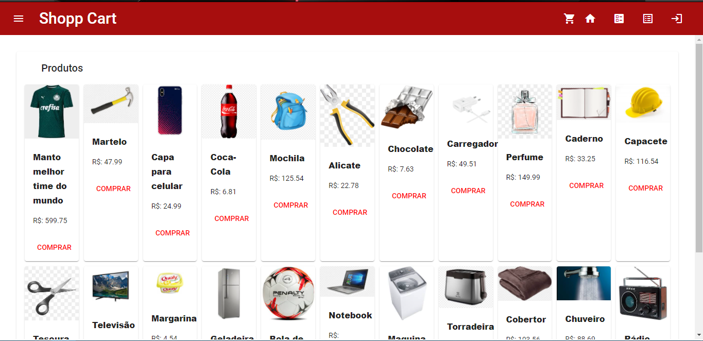
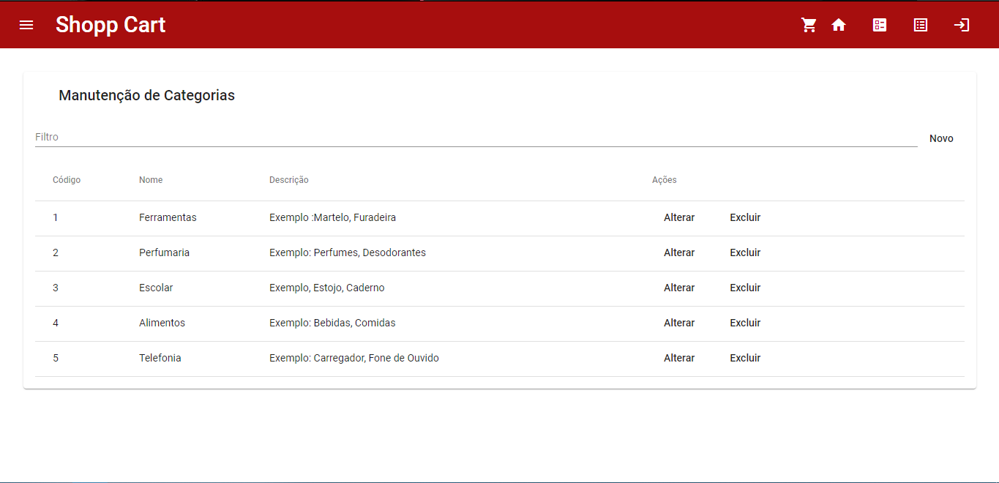
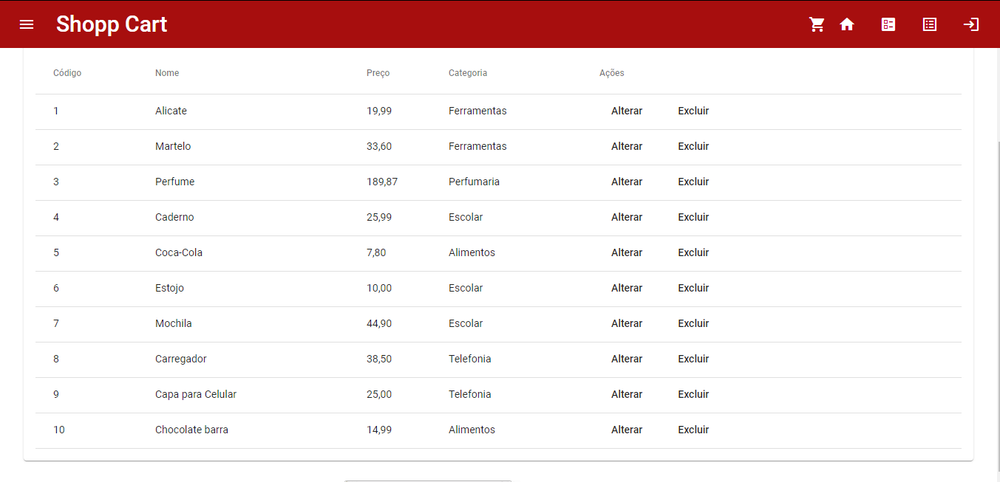
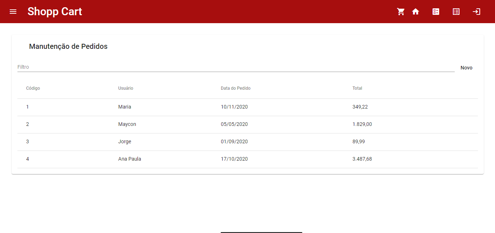
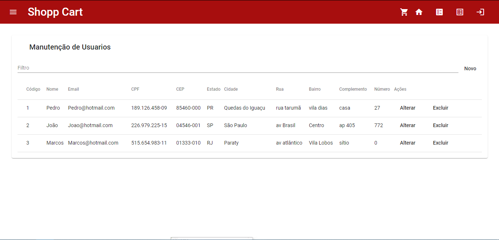
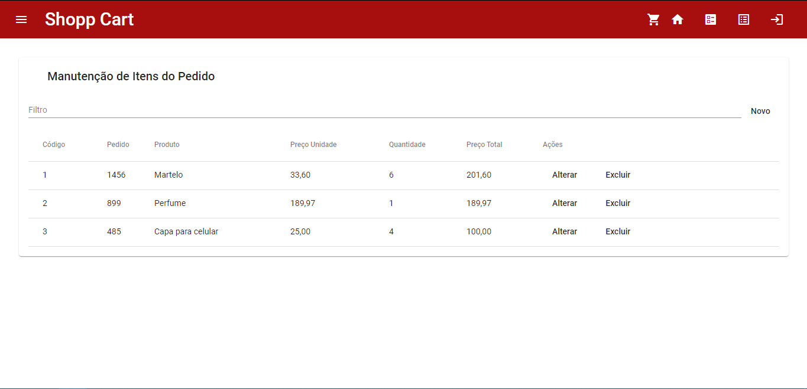

O sistema Shopping Cart se inicia com a tela Home, onde pode se visualizar todos os produtos localizados na loja. Porém, para que se faça alguma ação, como por exemplo "Comprar", o usuário terá que efetuar o login dentro do sistema para dar continuidade no processo.
No menu específico, pode realizar uma inclusão de um novo registro. Sendo assim, o usuário tem a possibilidade de definir o nome e uma descrição para controle de estoque/pedido. Também é possível filtrar as categorias, filtrando por código, Nome, ou Descrição.
Na tela de produtos, o usuário visualizará todos os produtos disponíveis na loja, seguindo a mesma linha de raciocínio do menu anterior, onde os filtros funcionam da mesma forma. Entretando com a inserção de uma nova coluna denominada "Preço", facilitando o usuário a buscar os registros de uma nova forma.
Aqui pode ser visualizado os pedidos feitos pelos usuários, informando o código do pedido, o usuário, data do pedido e o valor total do pedido. A opção de filtros é a mesma que em todos os menus, podendo filtrar pelos dados informados acima, possibilitando alterar alguma informação ou até mesmo excluindo algum pedido.
Usuários são agentes externos do sistema, ou seja, caso o colaborador necessite de um login para realizar suas atividades você deve clicar em "Novo" e definir: Nome; E-mail; CPF; CEP; Estado; Cidade; Bairro; Rua; Número; Complemento.
Para que consiga manusear os pedidos, é necessário ter os itens cadastrados. Com esses pré requisitos parametrizados(Pedido e produto), o usuário pode incluir um pedido definindo a quantidade, Preço unitário e Preço total.
